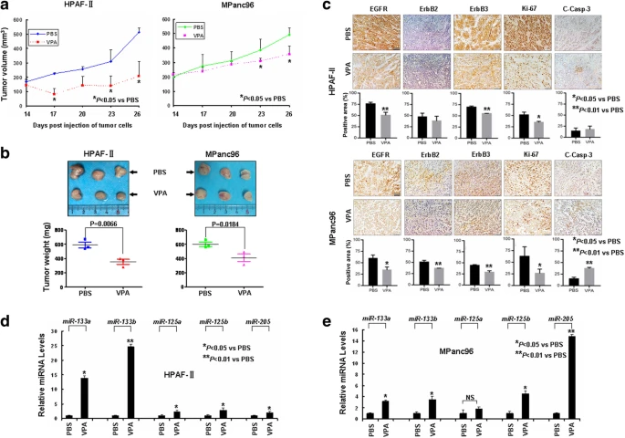

Qun Ren
About Me
I am Qun Ren, graduated from Xiamen University in 2019 with a master's degree in oncology. Since September 2020, I have been working at Binzhou Medical University, engaging in teaching and practical management.
Research Interests
- Tumor Microenvironment
- Tumor Epigenetics
- Tumor Treatment and Drug Resistance
Publications
-
 JECCRJournal of Experimental & Clinical Cancer Research (JECCR), 2019.
-
BBRC
Biochemical and Biophysical Research Communications (BBRC), 2018. -
 CMR
Cancer Management and Research(CMR), 2019.
CMR
Cancer Management and Research(CMR), 2019. -
 AJSER
American Journal of Science Education Research(AJSER), 2024.
AJSER
American Journal of Science Education Research(AJSER), 2024. -
BMC
 BMC
BMC
 BMC
BMC
Professional activities
American Association for Cancer Research (AACR), Membership
Presenting posters at the 5th AACR New Horizons in Cancer Research (NHiCR2019) Conferences. Presenting posters at the 4th AACR New Horizons in Cancer Research (NHiCR2017) Conferences.
Journal Reviewers
Education and information technologies (SSCI)
Innovation & Entrepreneurship Program,Tsinghua University. Mar.27-Apr.21, 2023.
Powered by Jekyll and Minimal Light theme.